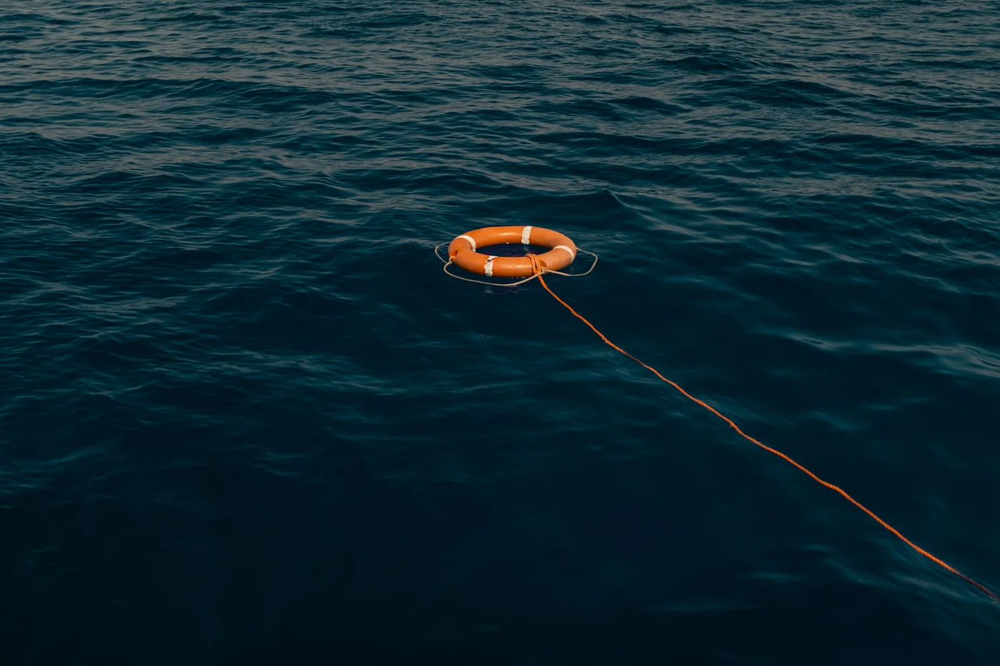

Principles
Built to be trusted

- The captain is in command. Marilosa advises; it never steers, switches or sends commands.
- Nothing depends on it. Everything on board works with Marilosa switched off.
- Missing is never reassuring. Old or missing information is shown as old or missing.
- Facts are kept apart. What was observed, what was reported, what is inferred and what may be the cause are shown separately.
- Options stay visible. Advice comes with alternatives and the reasons for them.
- Learning proposes. Changes to checklists and settings need the captain’s approval.
- Familiar at the helm. Designed following maritime interface conventions, with day, dusk and night modes.
- Only what the voyage needs. Each person decides what they share. No health information is ever recorded, and the crew’s “fit” or “not fit” stays on board for the voyage only.
Good for the crew and the sea
Marilosa follows the UN Sustainable Development Goals with simple indicators, measured on board and owned by the crew.
SDG 3 · Health
Lifejackets worn and serviced, MOB drills, beacons registered, crew trained.
SDG 13 · Climate
Litres per nautical mile, time at economical speed, energy not from burning fuel.
SDG 14 · Life below water
Anchoring on sand rather than seagrass, correct discharge, a clean hull.
SDG 12 · Responsible use
Maintenance on time and repair before replace, so equipment lasts longer.